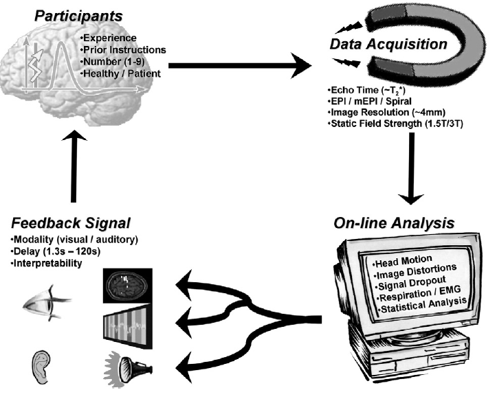
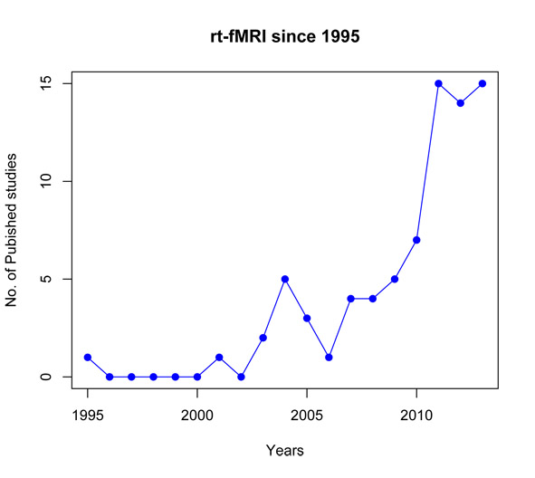

Real Time fMRI for the People!
Introducing Real-Time fMRI.
adapted from J. Sulzer et al. (2011)
Here we will define real-time functional magnetic resonance imaging (rtfMRI), first published by Cox et al. (1995) , as any process that uses functional information from a MRI scanner where the analysis and display of the fMRI keep pace with data acquisition. Although modern whole brain fMRI data sampling can be performed in around 500ms (Feinberg et al., 2010) , current real-time protocols use sampling rates of arround two seconds. According to Cox et al. first description of rt-fMRI, it can be used to control for quality during normal fMRI scanning, faster protocol development and interactive experimental paradigms. At present, rtfMRI has also been applied to intraoperative surgical guidance (Hirsch et al., 2000), brain-computer interfaces (BCIs) (Sorger et al., 2012; Yoo et al., 2004), and neurofeedback. However, as progress in the field advances and the challenges for future research and clinical applications are settled, this could be a powerfull tool aiding diagnostic as well as treatment.
Since the 1960s, several studies have shown that subjects can be trained by neurofeedback to gain voluntary control of different components of the electroencephalographic spectrum (Birbaumer, 2006). However, the use of metabolic activity, in particular, blood oxygenation-level dependent (BOLD) signal as a method to achieve this type of brain self-regulation has been much more recent and it tis now becoming feasible due to the progress in real-time functional magnetic resonance imagining (rtfMRI). Because of its high spatial and temporal resolution, rtfMRI has enabled subjects to achieve volitional control of the activity of circumscribed brain areas (deCharms et al., 2005; Hamilton et al., 2011; Rota et al., 2009; Yoo et al., 2006) but can also be used to track complex brain states that are essentially the sensory/behavioral events or mental processes for which a researcher might hope to find neural correlates through neuroimaging. In other words, ‘brain states’ are what could be represented as variables of interest in a very complex design matrix (LaConte, 2011). Hence, rtfMRI has the great potential to become a novel tool for cognitive neuroscience, in which the manipulation of the brain activity or brain states can be used as an independent variable that allows the study of subsequent behavioral modifications.
Consequently, as rt-fMRI is slowly emerging as a imaging modality with many imaginable applications in basic, translational and clinical neuroscience, here we would like to construct The rt-fMRI for the People Network which will support rt-fMRI studies and will enable researchers to be connected, sharing their experiences through the network. Thus, we’ll be able to better share our ideas, comments, resources, tools, experiences, data, and specally trobelshooting and finding ways to overcome current methodologiacal and technical issues. The rt-fMRI for the People Network will facilitate efficient exchange of ideas, tools, resources, experiences and data among anyone interested. We wish The rt-fMRI for the People Network will help to enhance the collaborations among the researchers, especially translate our knowledge into basic neuroscience and incorporate methodologies to clinical applications.
Welcome all, we hope you enjoy it here!
Schematic of rtfMRI control loop. Taken from J. Sulzer et al. (2011)

Published on 15 August 2013.
The steps of rt-fMRI since 1995
The first method for real-time fMRI was presented by Cox et al. (1995) .
Since then the field of rt-fMRI is slowly emerging with a slow increase in published articles in the last five years. 
Published on 16 July 2013.
This is the beginning of the rtfmri blog!
A collection of documents, demos and software to enable real time fmri
Things I would like to see:
- code
- walkthroughs
- discussions of different techniques
Published on 15 July 2013.

ABOUT the BLOG
Real Time fMRI
for
the People!
The rt-fMRI-blog is an all inclusive and hopefully simple way to guide you through the process of understanding, implementing and actually running your own real time experiments.
welcome and make your self comfortable!